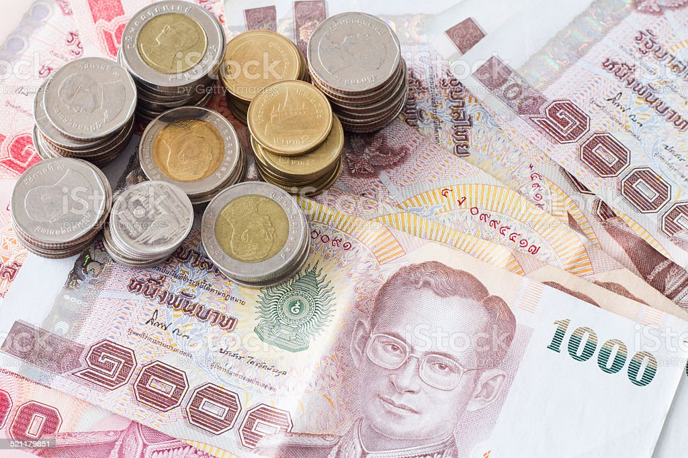
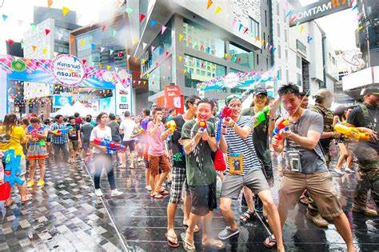

Travel Around The World

Thailand!
July 07, 2022by: Donut Ho
Thailand attracts many tourists with its gorgeous beaches, sparkling temples, delicious food and laid-back way of life. A few insider tips can help make your trip here that little bit easier – and way more enjoyable. Here are our top tips for your next visit to Thailand.
Outside the swanky restaurants, luxury malls and high-class hotels, Thailand is very much a cash-based society. There’s certainly little point heading to a market with a credit card. Many smaller accommodations also expect payment in cash, as do local restaurants and many attractions. Even some tour operators prefer traditional payment methods over plastic.
Make sure you carry enough cash to pay for your everyday needs. ATMs are generally widely available, even in smaller towns, but if you’re heading to more off-the-grid locations or remote islands, it’s best to replenish your funds before setting off. It also pays to have a good stash of smaller notes and coins for low-value purchases – many smaller stores and taxi drivers don’t have much change.
As with most places in the world, there are some common scams and tricks that abound in Thailand’s tourist areas. And, few things can ruin a great day on vacation as fast as realising you’ve been well and truly conned. Thailand’s laid-back atmosphere and smiling locals can make it easy to fall into a false sense of security.